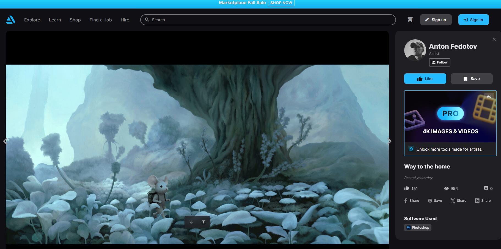

ต้องการเข้าใจทั้งด้าน Front-end และ Back-end ของการพัฒนาเว็บไซต์ เพื่อสร้างเว็บแอปพลิเคชันที่สมบูรณ์ที่สามารถทำงานได้จริง
คาดหวังว่าจะได้เรียนรู้เทคโนโลยีและเครื่องมือที่ใช้ในการพัฒนาเว็บอย่างครบวงจร รวมถึงฝึกเขียนโค้ดจริง ทำโปรเจกต์ และสามารถนำไปใช้พัฒนาเว็บไซต์จริงในอนาคต
จุดอ่อนของผมคือความจำ สามารถจำได้ในระยะสั้น แต่นาน ๆ ไปก็ลืม อาจจะต้องพัฒนาด้วยการพยายามทำบ่อย ๆ จนกว่าจะชินไปเอง
